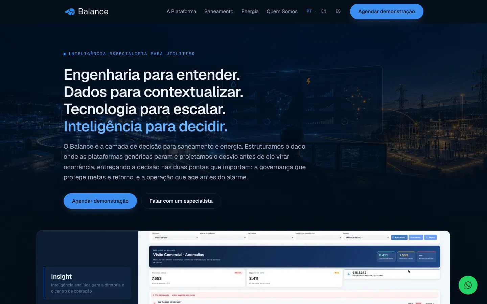

01Overview
Balance is a decision layer for water and sanitation utilities. It sits on top of the systems these companies already run (SCADA, GIS, billing, ERP, telemetry) and turns their data into a prioritised answer to one question: what should we fix first?
I led design across the entire product, from the marketing site to the four platform modules, and also acted as product owner. Over six months I worked with a project manager, two water regulation specialists, two engineers and a senior designer who helped me scale production.
Status: pre-launch, in active negotiation with utilities. Shown here with permission.
02The problem
Utilities don't lack screens. They lack the time and context to connect them. A pressure drop on SCADA, a billing anomaly and a pipe on the GIS map can be the same problem, but they live in different systems, owned by different teams.
Generic AI platforms don't close that gap. They read the number but don't know what it means for a water balance, a regulatory target or a crew in the field. Balance had to feel like a colleague who understands the sector, and the interface had to earn that trust.
03Designed around who does the work
A water utility isn't one user. It's seven areas of practice, each with its own routines, targets and vocabulary:
- Real and apparent loss control
- Water operations
- Sewage operations
- Commercial efficiency
- Legal and regulatory
- Engineering and projects
- Energy efficiency
Inside each area, managers and operators do very different jobs. Managers watch targets, trends and regulatory exposure. Operators need to know what to act on today, and where. So I structured the product around roles: every area has its own manager and operator views, with permissions, tasks and priorities shaped by what that person actually does in a working day.
If a screen didn't map to something an operator does on a Tuesday morning, it didn't ship.
With our domain specialists, every screen was checked against a real routine and the sector's own language (IWA water balance, SINISA indicators).
04AI you can audit
Utilities answer to regulators, so a confident answer isn't enough. Every AI output in Balance shows where it came from: which data, which agent, which logic. Answers are traceable from the headline number down to the source record.
05Four modules
| Module | What it does |
|---|---|
| Insight | Directors describe the dashboard they need in plain language and get it generated, then keep asking questions about the charts on screen. |
| Chat | Opens the full company database to natural language, on the platform or through WhatsApp, where field teams already are. The same traceability rules apply in both. |
| Field | Intelligence on the network map. Managers ask a spatial question and the map answers: filtered, styled and zoomed to the relevant area. A structured translation layer keeps the AI from inventing fields or values. |
| Cockpit | The admin layer used to manage tenants, access and agents. |
Underneath everything, a shared design system kept four very different modules consistent across a fast six-month build.
06Growing a brand into a product
Balance arrived with a logo and minimal guidelines, enough for a slide but not for a platform. I expanded it into a full visual language: colour roles for data and status, typography for dense operational screens, iconography, chart styles and the components that carry the brand into both the product and the marketing site.
07Closing
Balance is still on the way to market. What I'm proudest of is the shift it represents: from interfaces that display data to interfaces that help people decide, and that show their work.